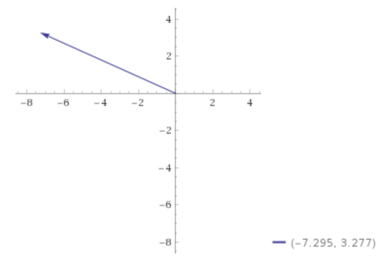

$\newcommand{\uvec}[1]{\boldsymbol{\hat{\textbf{#1}}}}$
$\newcommand{\diff}[2]{\frac{\mathrm{d}#1}{\mathrm{d}#2}}$
-
- $\vec{a} = \langle 7.3 \mathrm{cos}(250°), 7.3 \mathrm{sin}(250°) \rangle$
- $ = -2.497 \uvec{i} - 6.86 \uvec{j}$
-
- $\vec{A} = \langle -25, 40 \rangle$
-
- $\sqrt{25^2 + 40^2} = 5 \sqrt{89} \approx 47.1699$
- $\theta = \mathrm{arctan}(\frac{40}{-25}) \approx 122.01°$
-
- Let the corner the fly started at be at the coordinate $(0, 0, 0)$
-
- $\sqrt{3^2 + 3.7^2 + 4.3^2} \approx 6.41716$ meters
- No, barring some non-Euclidean geometry where the shortest distance between two points is not a straight line.
- Yes, the total displacement does not account for extraneous movement not on the displacement vector.
- Yes, if it flies in a straight line.
- $\vec{d} = \langle 3, 3.7, 4.3 \rangle$
- $3 + \sqrt{3.7^2 + 4.3^2} \approx 8.672$ meters
-
- $\vec{a} = \langle 250 \mathrm{cos}(60°), 250 \mathrm{sin}(60°) \rangle = \langle \frac{250}{\sqrt{3}}, 125 \rangle$
- $\vec{b} = \langle 175, 0 \rangle$
-
- $|\vec{a} + \vec{b}| \approx 342.9$ meters
- $21.377°$
- $250 + 175 = 425$ meters
- The magnitude of the displacement.
-
- $-8 \uvec{i} + 10 \uvec{j}$
- $\sqrt{164} \approx 12.8$ meters
- $\mathrm{arctan}(\frac{-4}{5}) + 90° \approx 128.66°$
-
-
- $\vec{b} = \langle 4 \mathrm{cos}(125°), 4 \mathrm{cos}(125°) \rangle \approx \langle -2.294, 3.277 \rangle$
- Let $\vec{c} = \vec{a} + \vec{b} = \langle -2.706, 3.277 \rangle$
- $|\vec{c}| \approx 4.249$ meters

- $\mathrm{arctan}(\frac{3.277}{-2.7.06}) \approx 50.45°$ clockwise of the negative x-axis.
-
- Let $\vec{d} = \vec{b} - \vec{a} = \langle -7.295, 3.277 \rangle$
- $|\vec{d}| \approx 7.997$ meters
- 
- $\mathrm{arctan}(\frac{3.277}{-7.295}) \approx 114.19°$ counterclockwise from the positive x-axis.
-
- $\vec{a} + \vec{b} = 3\uvec{i} - 2\uvec{j} + 5\uvec{k}$
- $\vec{a} - \vec{b} = 5\uvec{i} - 4\uvec{j} - 3\uvec{k}$
- $\vec{c} = -(\vec{a} + \vec{b}) = -3\uvec{i} + 2\uvec{j} -5\uvec{k}$
-
-
- $\vec{a} = \langle 10 \mathrm{cos}(30°), 10 \mathrm{sin}(30°) \rangle \approx \langle 8.66, 5 \rangle$
- $\vec{b} = \langle 10 \mathrm{cos}(135°), 10 \mathrm{sin}(135°) \rangle \approx \langle -7.071, 7.071 \rangle$
- The $x$ component of $\vec{r}$ is $1.589$
- The $y$ component of $\vec{r}$ is $12.071$
- $\sqrt{200} = 10\sqrt{2}$
- $\mathrm{arctan}(\frac{12.071}{1.589}) \approx 82.5°$
-
- $|\vec{a}| = \sqrt{27} = 3\sqrt{3}$
- $|\vec{b}| = \sqrt{14}$
- $\mathrm{cos}\theta = \frac{\vec{a} \cdot \vec{b}}{3\sqrt{42}}$
- $= \frac{24}{\sqrt{42}}$
- $\theta = \mathrm{arccos}(\frac{24}{\sqrt{42}}) \approx 113.7$ degrees.
-
- $\vec{N} \times \vec{W} = \uvec{k}$ given by the right hand rule.
- $\vec{D} \cdot \vec{S} = 0$ because the dot product of vectors with only one, different dimension is zero.
- $\vec{E} \times \vec{U} = -\uvec{j}$ given by the right hand rule.
- $\vec{W} \cdot \vec{W} = 1$ because the dot product of a vector with itself is the magnitude squared.
- $\vec{S} \times \vec{S} = \vec{O}$ because the cross product of a vector with itself is the zero vector.
-
- $\vec{v} = 120 \uvec{j} - 100 (\uvec{i})$
- $ = \langle -100, 120 \rangle$
- $|\vec{v}| = 20\sqrt{61} \approx 156.205$
- direction: $\mathrm{arccos}(-\frac{100}{20\sqrt{61}}) \approx 129.8°$ counterclockwise from East.
-
- $\vec{a} - \vec{b} = 6\uvec{i} + 8\uvec{j}$
- $\vec{a} + \vec{b} = 12\uvec{i} + 16\uvec{j}$
- $\vec{a} = \vec{b} + 6\uvec{i} + 8\uvec{j}$
- $2\vec{b} + 6\uvec{i} +8\uvec{j} = 12\uvec{i} + 16\uvec{j}$
- $2\vec{b} = 6\uvec{i} + 8\uvec{j}$
- $\vec{b} = \langle 3, 4 \rangle$
- $\vec{a} = \langle 9, 12 \rangle$